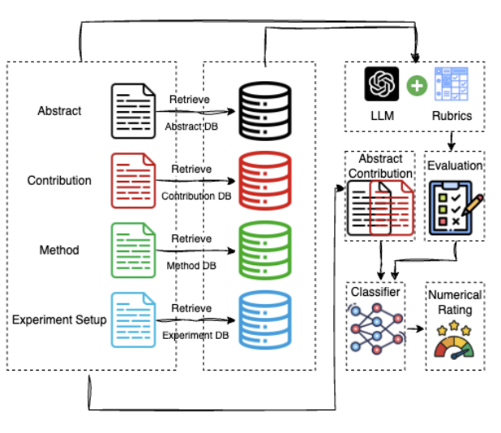
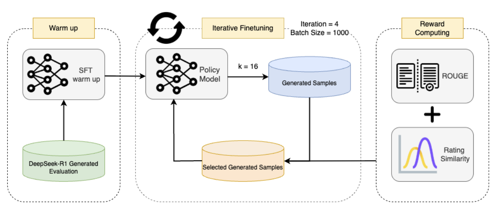
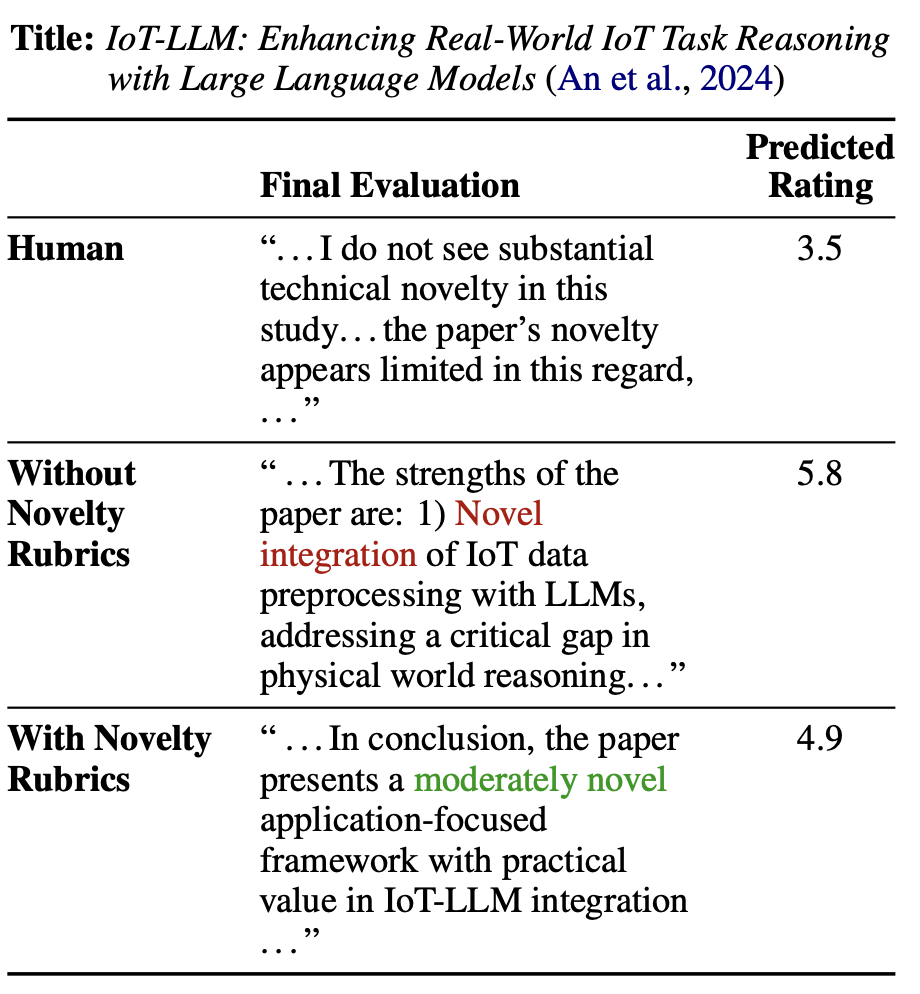
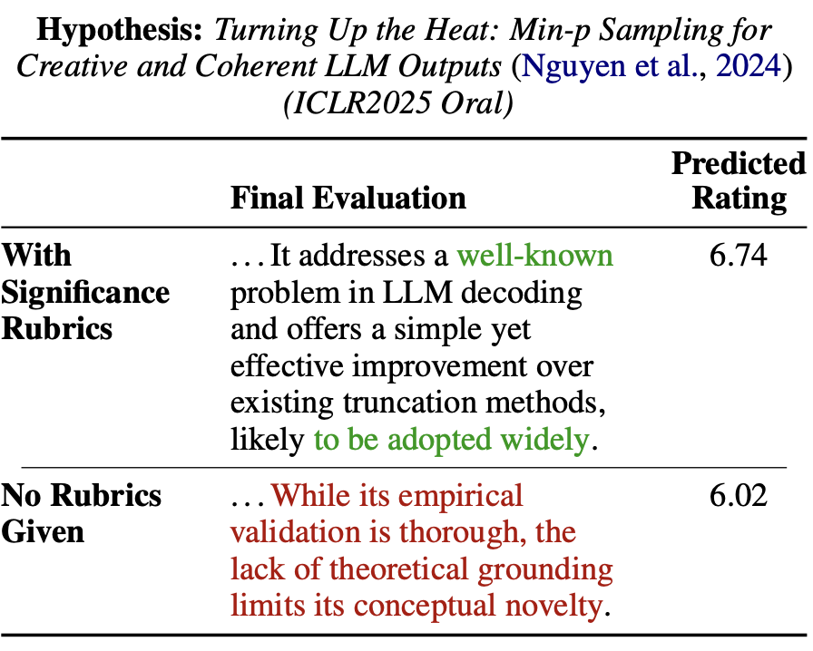
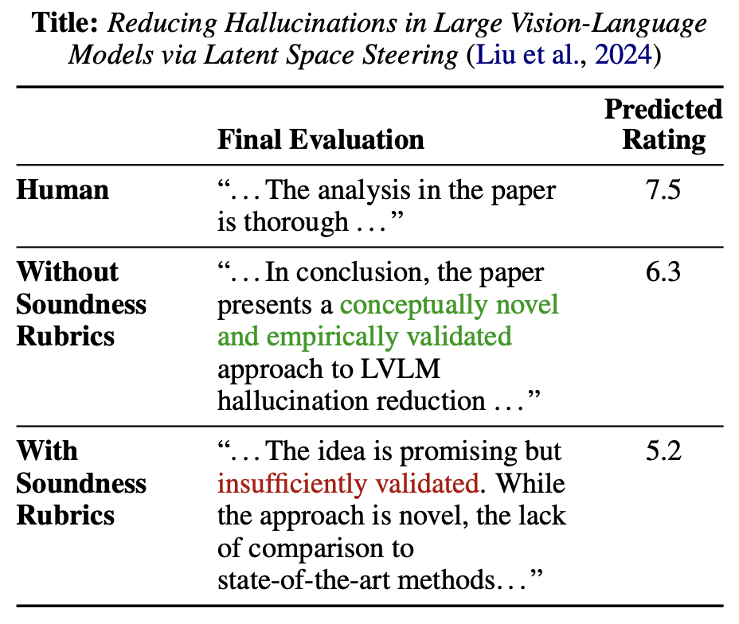
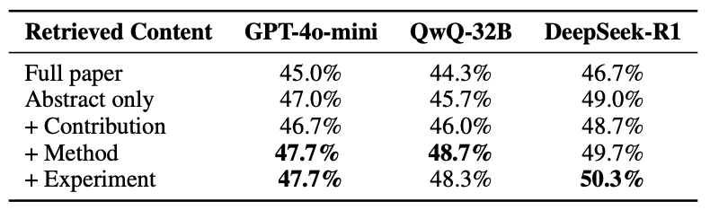
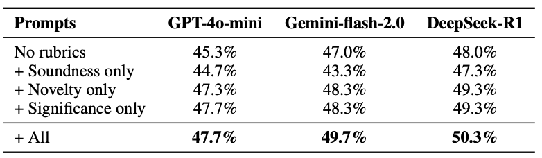
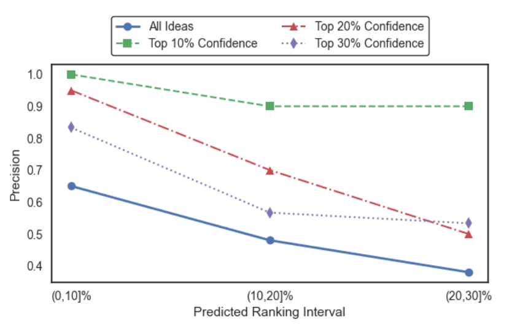

Abstract
The field of AI research is advancing at an unprecedented pace, enabling automated hypothesis generation and experimental design across diverse domains such as biology, math- ematics, and artificial intelligence. Despite these advancements, there remains a significant gap in the availability of scalable advising systems capable of providing high-quality, well-reasoned feedback to refine proposed hypotheses and experimental designs. To address this challenge, we explore key factors that underlie the development of robust advising systems, including model size, context length, confidence estimation, and structured reasoning processes. Our findings reveal that a relatively small model, when equipped with a well-compressed literature database and a structured reasoning framework, can outperform powerful general-purpose language models such as Deepseek-R1 in terms of acceptance rates for self-ranked top-30% submissions to ICLR 2025. Moreover, when limited to high-confidence predictions, our system achieves an acceptance rate exceeding 90% on the ICLR 2025 test set, underscoring its potential to significantly enhance the quality and efficiency of hypothesis generation and experimental design.

Inference Pipeline
Our pipeline evaluates research ideas in four steps: inputting the paper’s abstract, contributions, method, and experiment setup; retrieving section-level summaries of similar works from ICLR papers; generating structured feedback with rubrics on novelty, significance, and soundness; and producing a final 1–10 rating through a lightweight classifier. By using modular summaries, the system fits more literature into the same context window, enabling richer and more precise advising at scale. With rubric guidance, the feedback is not only detailed but also multi-dimensional, ensuring that each idea is assessed for originality, importance, and methodological & experimental rigor.

Training Pipeline
1. Warm-up SFT: We begin with Qwen2.5-7B-Instruct and fine-tune it on 4k high-quality idea–evaluation pairs synthesized with DeepSeek-R1. These rubric-guided examples teach the model how to provide structured advising feedback.
2. Reward Modeling: Next, we build a reward function that scores responses by aligning them with human ratings and checking textual similarity (e.g., ROUGE). This model helps identify which candidate outputs best reflect expert-style reviews.
3. RAFT: Finally, we apply Reward-Ranked Fine-Tuning in an iterative generate–select–train loop. The model produces multiple candidates, the reward function selects the highest-scoring ones, and these are fed back into training. This progressively sharpens the model’s ability to give rubric-grounded, human-like evaluations.
Rubric-Guided Evaluation
In GUIDE, rubric-based prompts guide the model to provide structured, reliable feedback for early-stage research ideas. These rubrics emphasize three key dimensions — Novelty, Significance, and Soundness. By explicitly structuring evaluations along these axes, GUIDE reduces hallucinations, improves alignment with expert review criteria, and ensures that each idea is assessed for originality, impact, and methodological rigor.

Rubrics on Novelty: guiding the model to assess originality of research ideas.

Rubrics on Significance: highlighting the importance and impact of contributions.

Rubrics on Soundness: ensuring methodological rigor and experimental validity, though sometimes overly strict.
Experiment Results
To evaluate GUIDE-7B, we tested it on 1,000 ICLR 2025 submissions (acceptance rate = 31.9%) using three metrics:
- Top-5% Precision: Among the top 5% highest-ranked papers by the model, the proportion that were actually accepted — measuring the ability to identify elite submissions.
- Top-30% Precision: Among the top 30% highest-ranked papers, the proportion that were accepted — aligning with ICLR’s real acceptance threshold and testing if the system can predict acceptable papers.
- Accept Recall: Among all papers actually accepted by ICLR 2025, the proportion that appear in the model’s top 30% predictions — measuring how many good papers the system does not miss.
Results show that GUIDE-7B achieves the highest Top-30% Precision (51.3%), outperforming larger general-purpose LLMs like GPT-4o-mini and DeepSeek-R1.
Main Results
| Model | Top-5% Precision | Top-30% Precision | Accept Recall |
|---|---|---|---|
| GPT-4o-mini | 70.0 ± 4.6% | 47.7 ± 2.4% | 44.8 ± 2.2% |
| QwQ-32B | 66.7 ± 1.2% | 48.6 ± 1.5% | 45.8 ± 1.4% |
| DeepSeek-R1 | 69.3 ± 4.6% | 50.2 ± 0.5% | 47.2 ± 0.5% |
| GUIDE-7B | 72.0 ± 2.0% | 51.3 ± 0.4% | 48.3 ± 0.3% |
Mean ± std over 3 trials.
Baseline Comparison
| Baseline / System | Accuracy | F1 |
|---|---|---|
| Human (NeurIPS) | 73.4% | 48.4% |
| AI Scientist with DeepSeek-R1 | 40.7% | 49.5% |
| AI Scientist with QwQ-32B | 42.7% | 43.3% |
| AI Scientist with GPT-4.1-nano | 61.2% | 20.8% |
| GUIDE-7B | 69.1% | 50.1% |
Ablation Experiments
We conduct two ablations to understand which components most strongly drive GUIDE’s advising quality. First, Modular Summarization tests how different retrieved contents affect precision under a limited context window. Second, Rubric-Guided Prompting isolates the effect of emphasizing specific review rubrics in the system prompt.
Ablation 1 — Scalable Advising with Modular Summarization
Replacing long full-text retrieval with concise, sectioned summaries lets the system pack more relevant literature into the same context window. Empirically, using summarized Abstract and Method is most beneficial for Top-30% Precision, while adding Experiment Setups can be inconsistent due to cross-paper mismatch of settings.

Takeaway: Summarized retrieval improves precision by increasing relevant coverage under context limits; Abstract + Method are the strongest pair.
Ablation 2 — Rubric-Guided Prompting
We compare prompts that emphasize different rubrics. Focusing on Novelty and Significance consistently boosts Top-30% Precision, whereas emphasizing only Soundness may hurt (overly strict to experimental design). Using all rubrics yields the best overall performance.

Takeaway: Novelty & Significance drive the most gain; Soundness-only can be detrimental; “All rubrics” performs best across backbones.
Uncertainty-Aware Evaluation
Beyond overall precision and recall, GUIDE-7B also quantifies its own uncertainty when evaluating research ideas. This allows filtering predictions by confidence level. The analysis shows that when only high-confidence predictions are considered, the system achieves over 90% precision in acceptance prediction. This demonstrates that GUIDE is not only competitive in aggregate ranking metrics, but can also provide trustworthy shortlists of promising papers by exposing confidence estimates alongside rubric-guided evaluations.

BibTeX
@article{YourPaperKey2024,
title={GUIDE: Towards Scalable Advising for Research Ideas},
author={Yaowenqi Liu and Bingxu Meng and Rui Pan and Tong Zhang},
journal={Conference/Journal Name},
eprint={2507.08870},
archivePrefix={arXiv},
primaryClass={cs.LG},
url={https://arxiv.org/abs/2507.08870},
}